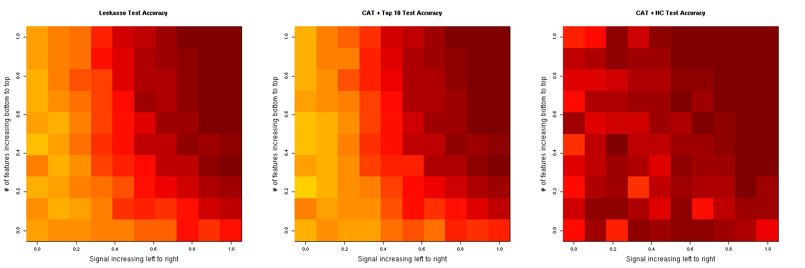

This package provides an efficient framework for high-dimensional linear and diagonal discriminant analysis with variable selection. The classifier is trained using James-Stein-type shrinkage estimators and predictor variables are ranked using correlation-adjusted t-scores (CAT scores). Variable selection error is controlled using false non-discovery rates or higher criticism.
Current Version: 1.3.9
Authors: Miika Ahdesmäki, Verena Zuber, Sebastian Gibb, and Korbinian Strimmer.
Documentation and Installation:
Quick install: enter at the R console: install.packages("sda")- Manual (pdf file) and release history.
- Download of sda version 1.3.9 source package.
- Archive of previous versions of sda.
- Licensed under the GNU GPL version 3 (or any later version).
Additional Material:
- Example R script for analyzing Khan et al. (2001) SRBCT data and corresponding PDF.
- Example R script for feature selection using Singh et al. (2002) prostate cancer data and corresponding PDF.
- R code for comparison of CAT score based variable selection with the leekasso.
See the discussion at the simply statistics blog and the results using the sda package:

Relevant Publication:
- Ahdesmäki, M., and K. Strimmer. 2010. Feature selection in omics prediction problems using cat scores and false non-discovery rate control. Ann. Appl. Stat. 4: 503-519. (arXiv:0903.2003)
- Zuber, V., and K. Strimmer. 2009. Gene ranking and biomarker discovery under correlation. Bioinformatics 25: 2700-2707. (arXiv:0902.0751)
- A. Kessy, A. Lewin, and K. Strimmer. 2015. Optimal whitening and decorrelation. (arXiv:1512.00809)
Connection of CAT Scores with Optimal Whitening:
- See the example R scripts whiten.R and whiten-example.R. For a discussion of the optimality of the whitening procedure underlying the CAT score see A. Kessy, A. Lewin, and K. Strimmer. 2015. Optimal whitening and decorrelation. (arXiv:1512.00809).
- Essentially, there exists a unique whitening transformation with the property that the whitened variables are maximally correlated to the original variables. Computing CAT scores for the original data is identical to computing t-scores from the optimally whitened data (cf. example R scripts).
Misc:
- A related variable ranking approach for models with continuous response using CAR scores is implemented in the care package.
- In G. I. Allen and R. Tibshirani (2012) there is an extensive comparison of CAT scores with related statistics (Table 2).